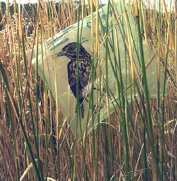
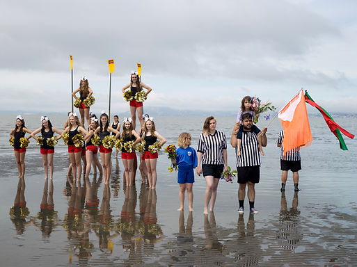

Tipping Point: Love Letters, Portals and...
Opening February 9
Artists: Kim Anno, Claudia Borgna, The Bureau of Linguistical Reality (Heidi Quante and Alicia Escott), Jamee Crusan, Glenna Cole Allee, Alicia Escott, Kiko Le Strange aka Marco Garcia, Stacey Goodman, Rebecca Swan, WHIZ WORLD with Queen Whiz, Ghost Whiz and Furtips, and the Dream Farm Team.
How to hold this moment of environmental precarity in which we exist? The world's leading climate scientists have warned that only a dozen years remain for us to avoid an irreversible tipping point, yet we pitch forward with an ever expanding carbon foot print and economy. How do we hold the geologic impact of our actions, on ocean, land, atmosphere, animals? The illogic of systems tooled for short term profit? Where to hold fires, floods and fear of extinction?
In this exhibition, we searched for resilient forms of response, the poetic, the oblique and the direct, for re-tooling, re-imagining in all ways, claiming both activist boldness and the subtlety of a small sparrow.
We grounded ourselves first in the visual: small drawings, bold photographs, reconfigured bodily forms, materials from the sea, mystical futuristic flowers, conceptual considerations... We bear in mind recent movements like Extinction Rebellion and the new Green Deal—what actions, poetics and possibility do they offer us?
 